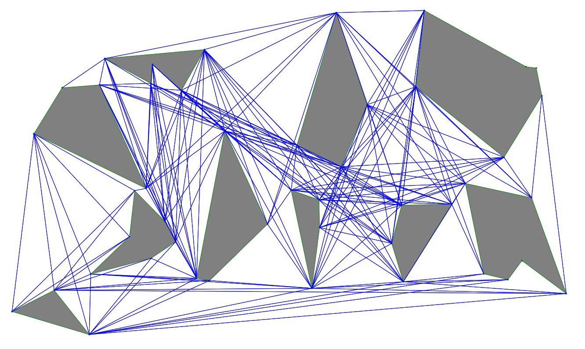
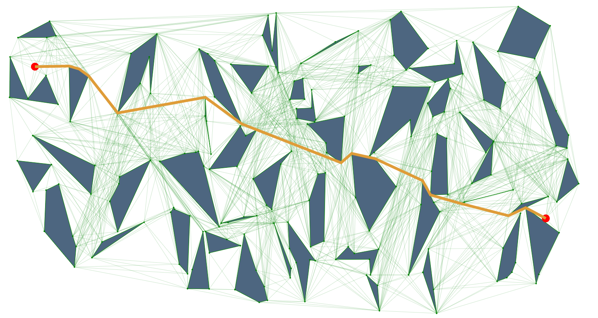
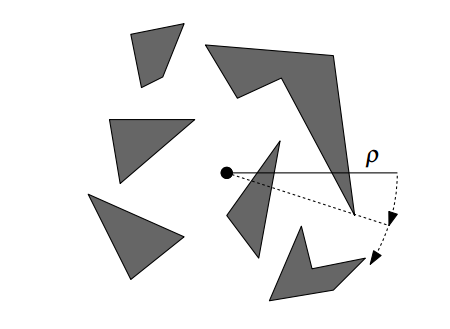
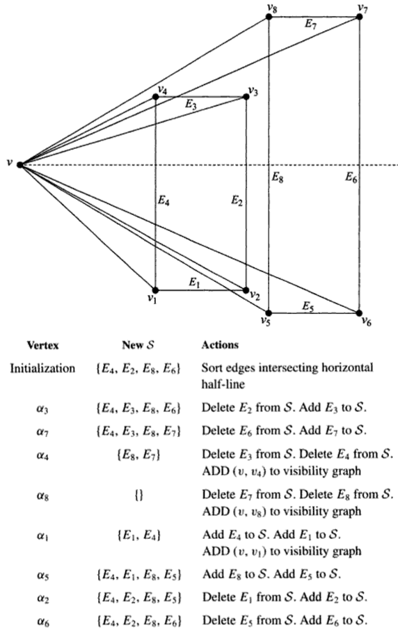
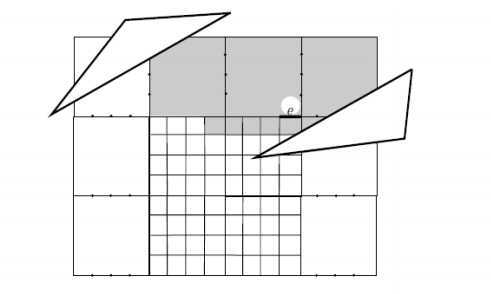
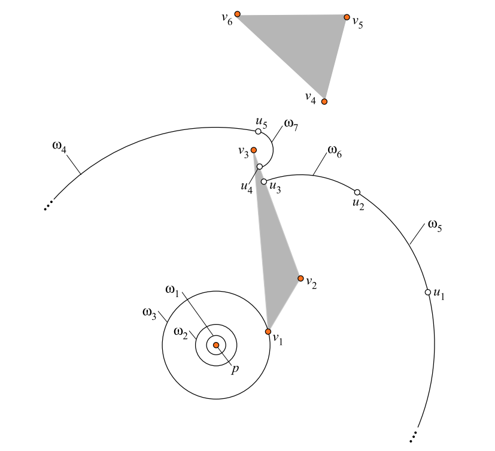
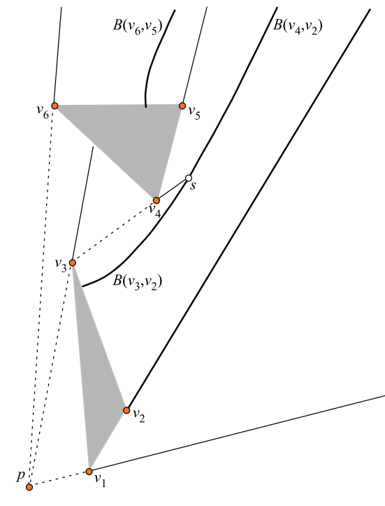

Euclidean Shortest Paths
Introduction
We will explore the problem of Euclidean Shortest Paths, and discuss various solutions and their time complexities. The problem is, given a set of polygons defined by their vertices, a start point, and an end point, find the shortest path from start to end, without passing through any polygons. It is also known as the shortest path through an obstacle field, or shortest path within a polygon with holes.
This problem is very closely related to visibility graphs. Visibility graphs connect nodes of a graph that are visible to one another. Since a Euclidean shortest path must follow straight line segments, the solution will lie on the edges of polygons. More specifically, the solution will be the shortest path between the two endpoints in the visibility graph.
Many of the algorithms for Euclidean shortest path involve finding more efficient ways to compute visibility graphs. We will discuss a few of these algorithms and demo a couple of them in action.
Naive algorithm O(n3)
The naive approach is to brute force the entire visibility graph. This is done by comparing every pair of nodes in the graph, and if they intersect an existing edge of an obstacle. If no intersections are found, then the edge is added to the visibility graph.
For n obstacle vertices, each vertex can be matched with n-1 other vertices in O(n2) time. Then each edge between the pairs must be compared to n polygon edges, for O(n3) total comparisons.
This produces the complete visibility graph of the obstacles, and we can use it to calculate the shortest path. We can label each edge with the length of the edge, and run Dijkstra's shortest path algorithm with the endpoints included, in O(E + V log V) time.
I won't go into much more detail about the naive approach. This gives an overall O(n3) time complexity for the brute forcing the visibility graph. It is worth noting that Dijkstra's algorithm provides the lower bound for the visibility graph approaches because we must use it to calculate the shortest path at some point.
Visibility graph rotational sweep O(n2 log n)
This approach improves on the construction time of the visibility graph. It takes advantage of the idea that visiting the obstacle vertices in a certain order removes the need to perform a brute force search. If we sweep a line through all the vertices, visiting them in the order encountered, we can search fewer collisions.
Intuitively, if two points are close to one another, their vectors probably collide with many of the same edges. We will perform a rotational plane sweep on each vertex of the graph to find the subset of visible points.
// Given: Set of obstacle vertices Vi, and query vertex V
0. function rotationalSweep (Vi, V) {
1. Calculate the angle from horizontal to all points in Vi
2. Sort the list of angles A in increasing order
3. Calculate a list S of edges that intersect the horizontal.
4.
5. For all Ai:
6. If V is visible to Vi:
7. Add the edge to visibility graph
8.
9. If Vi has an edge E not in S:
10. Insert E into S
11.
12. If Vi has an edge E in S:
13. Remove E from S.
14. }Step 1 has to visit every vertex once and perform the trig calculation. O(n). The angles in Step 2 can be sorted with an O(n log n) sorting algorithm. Step 3 involves going through each polygon edge and seeing if the horizontal intersects it. O(n).
The loop runs O(n) through all the sorted angles. This represents a sweep through the vertices, counterclockwise starting from the horizontal. We start with a list of edges that go through the horizontal, and go to the next vertex in the sorted list. We know that the next vertex must either be visible, or be blocked by at least one of the active edges in S, since we are visiting the vertices in order.
As we continue through the sweep, we keep updating S by removing edges that have passed, and adding edges that can later cause collisions. This optimizes the search step to only care about the edges active in S, and avoiding the O(n3) approach of searching every edge.
Here is an illustration of a rotational sweep walking through each step. 
The rotational sweep subroutine is O(n log n) overall, but we still need to run it on every vertex to calculate the full visibility graph. Now we are able to improve the visibility graph generation to O(n2 log n), and Dijkstra's algorithm can be used to find the shortest path.
More Visibility Graph Algorithms
Since the rotational sweep algorithm was invented, there have been various attempts to further improve the construction time of the visibility graph. I won't go into too much detail about them because the papers are fairly complicated. They all have various approaches to improve on time and space complexities for solutions.
New methods for constructing visibility graphs Overmars and Welzl Time: O(E log n), E is number of edges in the resulting visibility graph.
An output sensitive algorithm for computing visibility graphs Ghosh and Mount Time: O(n log n + E), Space: O(E)
Topologically sweeping visibility complexes via pseudo-triangulations Pocchiola and Vegter Time: O(n log n + E), Space: O(n)
Efficiently Constructing the Visibility Graph of a Simple Polygon w/ obstacles Kapoor and Maheshwari Time: O(m log n + T + E), m is number of obstacles, and T is time taken to triangulate the polygon.
Hershberger and Suri's Wave Algorithm O(n log n)
Previously, all the algorithms had focused on building the visibility graph, and solving the shortest path problem with Dijkstra's. Here we introduce a new way of approaching the problem, using simulated wave propagation through the obstacle field.
Intuitively, we can imagine water flowing out of the start point, and spreading through the obstacle field in waves. The waves all travel at the same velocity, bounce off of walls, round corners, and continue propagating around the obstacles. When the first wave reaches the end point, the shortest path must be the path that this wave has taken.
This algorithm doesn't require calculating the visibility graph at all, which was the focus in the previous approaches. Here, our goal is to simulate the behavior of these waves, and track their path through the obstacle field.
The space is subdivided into a quadtree structure, where only at most one obstacle vertex is in any cell and a constant number of cells are within distance of every subdivision edge. The subdivision is built in O(n log n) time. The wavefront is then approximated through these discrete subdivision cells instead of through free space.
An extension of this algorithm is known as the Continuous Dijkstra Problem. A similar algorithm was developed called Mitchell's algorithm, to calculate a shortest path map in the obstacle field in O(n log n) using the same wave manipulation methods. Mitchell's algorithm tracks collision events with vertices, and calculate new wave trajectories as they happen.
As the wave collides with each vertex, two things happen. A new wave is formed with the colliding vertex at the root, and that propagates away from the obstacle it is attached to. Part of the original wave then gets culled, and the vector from the original wave's root to the collision vertex bounds the original wave.
In this diagram, p is the original root, v are the vertices of the obstacles, ω corresponds to waves, and u corresponds to points where a wave has been culled. ω7 is the new wave formed by a collision with v3. ω4 is cut off after the collision, and u5 is the culling point. The waves "bend" around the obstacles, and the wavefront represents the shortest path from the original source.
When two waves collide, they form boundaries that define which wave "reached" a point first. A point within the boundary of the wave has its shortest path from the root defined as the path of the wave.
This diagram illustrates the shortest path map from the source p. The boundaries B define where the waves collided. The shortest path map can be used instead of Dijkstra's here, for calculating Euclidean shortest path.
Demos
Visibility Graph demo This is a demo of finding shortest paths using a visibility graph. Clicking on any point on the map will show the shortest path from the source in blue, and all the visible points from that point in red.
Mitchell's Algorithm demo This is a demo of approximate wave propagation through obstacles. The demo illustrates how the waves bend around corners to reach new regions and find the shortest path to a target. The demo is a work in progress, and there are a couple bugs with my wave culling code currently, but it is accurate most of the time.